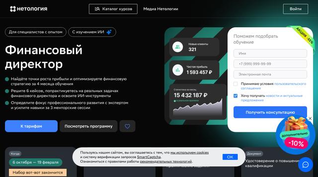
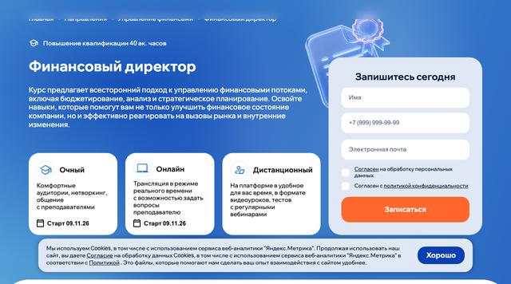
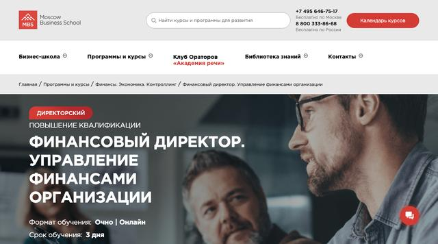

Проходила обучение по программам «финансовый аналитик» и «МСФО». Очень качественные материалы и подача преподавания! Информации очеееень много и вся нужная! Здорово, что курсы остаются с тобой навсегда со всеми обновлениями и обратной связью. Отдельно хочу отметить преподавателя по МСФО Аллу - было очень интересно слушать лекции, по итогам курса Алла всегда на связи и дает обратную связь, при необходимости
Mini-MBA: Финансовый директор — SF Education
Сверено с сайтами школ · методика

Главное о курсе
Есть в описании курса · 11 из 12
- Бюджетирование
- Денежные потоки и платёжный календарь
- Управленческий учёт и отчётность
- Анализ финансовой отчётности
- МСФО
- Оценка инвестпроектов и бизнеса (NPV, IRR, DCF)
- Финансовое моделирование
- Привлечение финансирования: кредиты, лизинг, инвесторы
- Налоговое планирование
- Управление финансовыми рисками
- Цифровые инструменты: Excel, BI, ИИ
Не нашли в описании — спросите школу · 1
- Организация финансовой службы
Для кого
- Тем, кто приходит в финансы без опыта
О документе
Удостоверение о повышении квалификации подтверждает, что вы обновили знания в своей профессии. Права на новый вид деятельности оно не даёт — для этого нужна переподготовка.
Другие программы — SF Education
Программы для CFO
Кому подойдёт и чем отличается
Программа «Mini-MBA: Финансовый директор» подойдёт прежде всего тем, кто уже работает в финансах и хочет закрыть конкретную тему без смены профессии; школа отдельно адресует её тем, кто приходит в финансы без опыта. По цене она дороже середины каталога (98 500 ₽), а по формату — онлайн.
У этой же школы есть программа «Финансовый директор + ИИ»: это онлайн-курс с собственным документом, а не программа повышения квалификации; стоит 98 000 ₽ — дешевле на 82 250 ₽; длится 7 месяцев (16 модулей); по итогу — сертификат / диплом школы.
У этой же школы есть программа «Mini-MBA: Цифровой финансовый директор (Digital CFO)»: это онлайн-курс с собственным документом, а не программа повышения квалификации; стоит 196 000 ₽ — дороже на 15 750 ₽; длится 12 месяцев (28 модулей); по итогу — сертификат / диплом школы.
Выбирайте между ними по цели: нужен ли официальный документ, сколько часов в неделю вы готовы учиться и какой бюджет комфортен.
Плюсы и оговорки
Плюсы
- По итогу выдают удостоверение о повышении квалификации
- Номер образовательной лицензии опубликован (№ Л035-01271-78/00177402) — его легко найти в реестре Рособрнадзора
- С промокодом onlinekursy цена ниже ещё на 15%
- Школа принимает оплату частями
- Описание охватывает 11 из 12 ключевых тем финдиректора
- Есть 18 отзывов учеников о финансовых курсах школы — они ниже на странице
Оговорки
- На 83% выше медианной цены каталога (98 500 ₽)
- Объём в часах школа не указала
Как курс выглядит среди остальных
| Цена | 180 250 ₽ | ниже, чем у 7 из 30 программ |
|---|---|---|
| Срок | 10 месяцев (16 модулей) | длиннее медианы каталога (5 мес) |
| Ключевые темы | 11 из 12 | обычно по каталогу — 9 из 12 |
Сколько стоит и как заплатить меньше
| Цена у школы | 180 250 ₽ |
|---|---|
| С промокодом onlinekursy | 153 212 ₽ |
| Рассрочка | есть, подробности у школы |
| Налоговый вычет | до 19 500 ₽ — 13% от оплаченной суммы, если у школы есть лицензия; при ставке НДФЛ выше 13% — больше |
Промокод на −15%
Что ученики пишут о школе «SF Education»
Я прошёл курс "Кредитный аналитик" от SF Education и остался доволен результатом! Данный курс отлично помогает молодым специалистам в короткий срок получить мощный фундамент знаний, на основе которого можно начать нарабатывать реальные практические навыки в сфере финансов. Преподаватели - мастера своего дела, которые умеют объяснить сложные вещи простыми словами. Тематика кредитного…
Я прошёл курс "Кредитный аналитик" от SF Education и остался доволен результатом! Данный курс отлично помогает молодым специалистам в короткий срок получить мощный фундамент знаний, на основе которого можно начать нарабатывать реальные практические навыки в сфере финансов. Преподаватели - мастера своего дела, которые умеют объяснить сложные вещи простыми словами. Тематика кредитного анализа востребована в современных условиях, поэтому прохождение этого курса даст мощный импульс вашей карьере в финансах! Инвестиции в знания платят лучшие дивиденды!) Плюсы: - постоянный доступ - обновление материала - диплом - поддержка преподавателей
В онлайн-университете SF Education я уже с 2020 года. За эти несколько лет прошла курсы: Инвестиционный аналитик, Power BI и Power Query и вот сейчас купила новый курс Mini-MBA Digital CFO, потому что хочу получить новые навыки в SQL, Python. Рекомендую SF всем своим знакомым, коллегам и друзьяv, которые хотят приобрести или повысить знания и навыки в финансах. Несколько человек по моей…
В онлайн-университете SF Education я уже с 2020 года. За эти несколько лет прошла курсы: Инвестиционный аналитик, Power BI и Power Query и вот сейчас купила новый курс Mini-MBA Digital CFO, потому что хочу получить новые навыки в SQL, Python. Рекомендую SF всем своим знакомым, коллегам и друзьяv, которые хотят приобрести или повысить знания и навыки в финансах. Несколько человек по моей рекомендации прошли курсы Финансовый аналитик и Инвестиционный аналитик, и очень довольны, причем после обучения нашли хорошую работу по этому направлению. К слову, и я сама получила отличное предложение о работе в федеральной компании. Самое главное, что обучение проходит очень удобно в онлайн-формате, на платформе видео-уроки, задания, постоянно сопровождает куратор и в чатах можно задать любой вопрос, на который оперативно ответят преподаватели - это очень круто! Также регулярно проводятся вебинары и онлайн-встречи, на которых разбираются рабочие кейсы. Я пришла в SF, работая финансовым директором и мне не хватало навыков по финансовому моделированию. Здесь я получила все навыки моделирования, причем учились строить и разбирали фин. модели в самых разных отраслях. Также подтянула знания в корп. финансах, юнит-экономике. А power BI и Query - это просто находка! Я проходила множество курсов на разных платформах, но хочу отметить, что именно в SF дают только те знания, которые можно сразу же применить, т.е. никакой воды. Я рекомендую SF Education и студентам, которые хотят приобрести очень нужные и востребованные на рынке труда навыки в финансах, и финансистам с опытом работы, у которых есть конкретные запросы, т.е. не хватает каких-то узкоспециализированных знаний и умений. Тем более, что в SF можно приобрести не целый курс, а отдельные необходимые модули. Хочу поблагодарить основателя SF Александра Вальцева и всех преподавателей и кураторов за безупречную работу и качественный продукт!
Добрый день! С удовольствием хочу порекомендовать курс «Финансовый директор» от SF Education. Четко, понятно, всегда поддержка на связи. Предметы отличные, есть записи семинаров. Помимо этого есть возможность купить какие-то интересующие блоки из других курсов. Много практических примеров. Возможность онлайн-консультации с преподавателем. Трекер отслеживания просмотренных уроков. Это очень…
Добрый день! С удовольствием хочу порекомендовать курс «Финансовый директор» от SF Education. Четко, понятно, всегда поддержка на связи. Предметы отличные, есть записи семинаров. Помимо этого есть возможность купить какие-то интересующие блоки из других курсов. Много практических примеров. Возможность онлайн-консультации с преподавателем. Трекер отслеживания просмотренных уроков. Это очень помогает планировать свое обучение. Отдельным плюсом диплом гос. Образца и возможность получить налоговый вычет за обучение (я получила и очень довольна). Рекомендую сам курс и целиком всю платформу совершенно справедливо, ибо уровень, поддержка и релевантность знаний — на высоте.
Не первый год знаком с курсами SF Education и всегда остаюсь доволен! В том году прошёл отдельные модули "Введение в финансовый учёт и анализ" и "Корпоративные финансы" - удобная подача материала, большое количество практики и заданий, подробные гайды от экспертов SF. Преимущества, что отличают данную школу от других подобных ресурсов: - единожды купленные модули и курсы остаются с тобой…
Не первый год знаком с курсами SF Education и всегда остаюсь доволен! В том году прошёл отдельные модули "Введение в финансовый учёт и анализ" и "Корпоративные финансы" - удобная подача материала, большое количество практики и заданий, подробные гайды от экспертов SF. Преимущества, что отличают данную школу от других подобных ресурсов: - единожды купленные модули и курсы остаются с тобой навсегда (а то сейчас стало "модно" открыть доступ на месяц/год, а потом закрыть) - купленные материалы постоянно обновляются, что позволяет возвращаться к ним даже после завершения снова и снова - благодаря практическим навыкам, возможность применять полученные знания сразу на своём рабочем месте - диплом/сертификат как приятный бонус и подтверждение полученных компетенций - всегда открытые к диалогу кураторы В этом году решил углубить познания в области финансов и приобрёл полноценный курс на базе повышения квалификации - "Финансовый аналитик". Приятно, что помимо основных модулей курса в подарок идёт ещё с десяток бонусных модулей. Настоятельно рекомендую сей онлайн-университет всем интересующимся финансами в частности и бизнесом в общем!
Проходил курс по программе "Инвестиционный аналитик". Брал его, чтобы повысить квалификацию в финансах. Курс понравился. Много практических задач. Материалы именно те, которые нужны для решения рабочих задач. Преподаватели, при необходимости, оперативно отвечают на возникающие вопросы. В общем, для меня курс был очень полезен. Советую.
Очень понравился курс «Финансовый Советник». Подробная экспертная база со всеми нюансами для ведения деятельности. Спикеры сильные практики с большим опытом. Так же очень практичный блок по ведению бизнеса и привлечению клиентов. Самый подробный курс по финансовому консультированию, из всех что я проходила. Благодарю основателей и лекторов за это обучение.
Курс по финансовому моделированию от SF Education оставил исключительно положительное впечатление. Учебный процесс выстроен грамотно: материал подаётся последовательно — от базовых принципов до построения комплексных моделей. Преподаватели демонстрируют высокий уровень экспертности. Практическая направленность курса, обилие шаблонов и работающих кейсов позволяют сразу применять полученные знания…
Курс по финансовому моделированию от SF Education оставил исключительно положительное впечатление. Учебный процесс выстроен грамотно: материал подаётся последовательно — от базовых принципов до построения комплексных моделей. Преподаватели демонстрируют высокий уровень экспертности. Практическая направленность курса, обилие шаблонов и работающих кейсов позволяют сразу применять полученные знания в реальных задачах. Благодарю команду SF Education за качественный образовательный продукт — рекомендую курс всем, кто хочет углубиться в финансовое моделирование и повысить свою профессиональную квалификацию.
Рядом с похожими курсами
Вы смотрите
SF Education
Mini-MBA: Финансовый директор
- Цена
- 180 250 ₽
- Срок
- 10 месяцев (16 модулей)
- Документ
- Удостоверение
- Темы
- 11 из 12
Русская Школа Управления
- Цена
- 99 000 ₽
- Срок
- —
- Документ
- Удостоверение
- Темы
- 8 из 12
Московская Бизнес Школа
- Цена
- 59 900 ₽
- Срок
- 3 дня
- Документ
- Удостоверение
- Темы
- 8 из 12
Добавьте курсы кнопкой «Сравнить» — откроется таблица со всеми параметрами.
Частые вопросы
Какая цена у программы «Mini-MBA: Финансовый директор»?
По данным сайта школы «SF Education» — 180 250 ₽. По промокоду onlinekursy выйдет 153 212 ₽.
Как долго учиться?
Школа указывает срок 10 месяцев (16 модулей).
Что выдают по окончании?
Удостоверение о повышении квалификации.
Есть ли оплата частями?
Есть. Подробные условия — на сайте школы.
Получится ли вернуть налог за этот курс?
Да, если у школы есть образовательная лицензия. Вычет — 13% от оплаченной суммы (при ставке НДФЛ выше 13% — по вашей ставке), для этого курса при ставке 13% — до 19 500 ₽. Лимит 150 000 ₽ в год общий для всех социальных вычетов, и вернуть можно не больше уплаченного налога.
Действует ли промокод?
Да: onlinekursy снижает цену на 15%. Код вводят при оплате на сайте школы.
Ещё варианты того же типа

Финансовый директор
- Цена
- 107 100 ₽
- Срок
- 4 месяца
- Объём
- —
- Отзывы
- 1 отзыв
Удостоверение о повышении квалификации

Финансовый директор (повышение квалификации)
- Цена
- 99 000 ₽от 9 900 ₽/мес
- Срок
- —
- Объём
- 40 ак. ч
- Отзывы
- нет
Удостоверение о повышении квалификации
Промокод на −20%

Финансовый директор. Управление финансами организации
- Цена
- 59 900 ₽
- Срок
- 3 дня
- Объём
- —
- Отзывы
- 2 отзыва
Удостоверение о повышении квалификации или сертификат MBS
Промокод на −10%